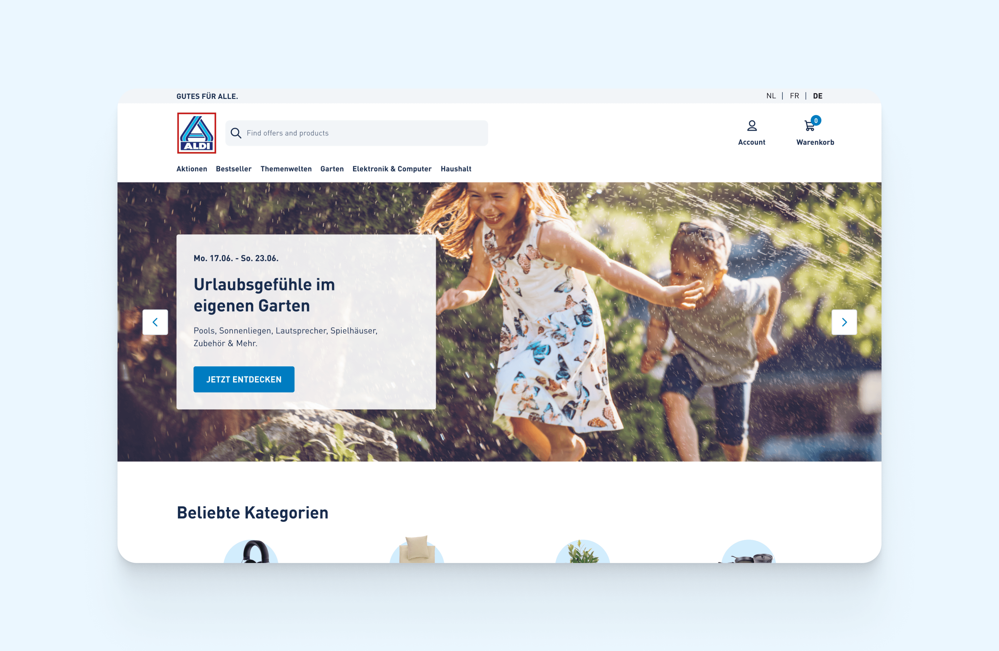
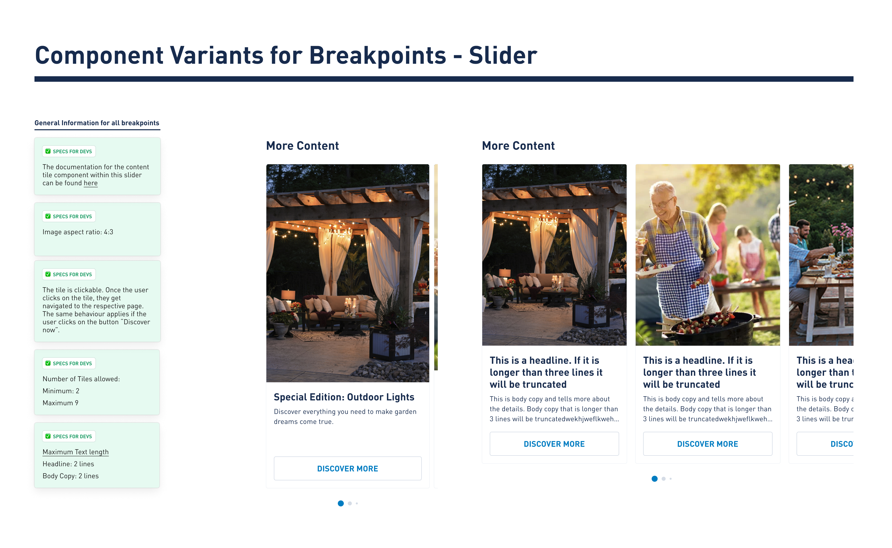

Online
Shop
Redesign
Aldi Nord, together with its sister is a prominent retail chain known for its discount supermarket stores across Europe and beyond. Seeking a fresh and innovative approach to better engage their customers in the digital realm, it was time to revamp and enhance the user experience of their online shop.

The overall task was to create a new and refreshed user experience for the Aldi Nord online shop, starting with Spain, France and Netherlands. The development was handled by another contractor who was working in parallel as the design progressed.
Note: Unfortunately, the project was put on immediate hold by the end of October, leaving my work unpublished as it has not been fully developed yet.
With Aldi Nord as a client, there were various projects running simultaneously. While other teams were working on the main website, a global Design System or an omnichannel project, I was Team Lead for the E-Com project.

